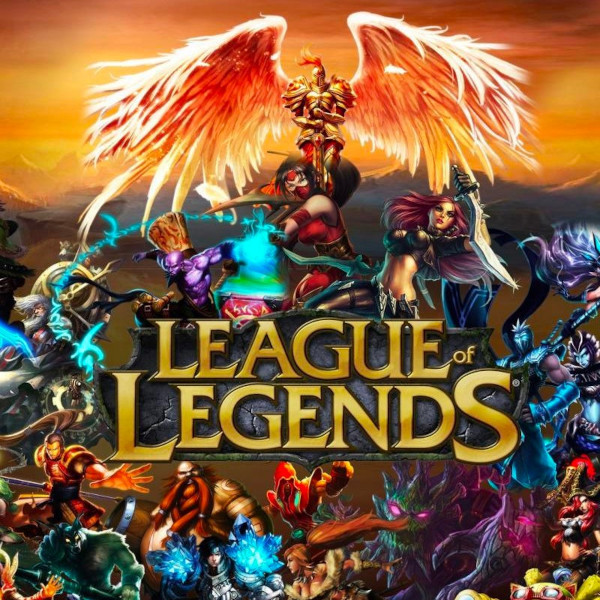
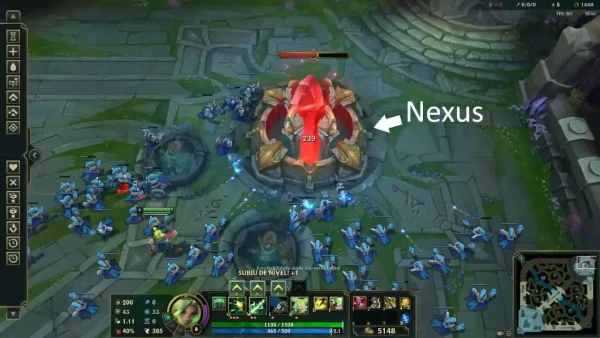
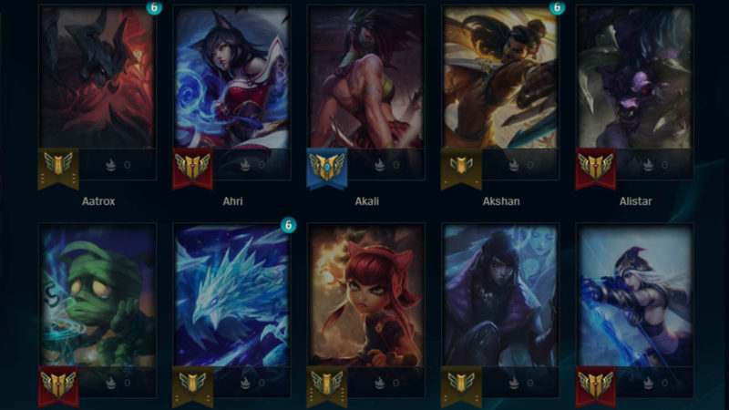

League of Legends
O que é League of Legends? League of Legends é um jogo de estratégia em que duas equipes de cinco poderosos Campeões se enfrentam para destruir a base uma da outra. Escolha entre mais de 140 Campeões para realizar jogadas épicas, assegurar abates e destruir torres conforme você luta até a vitória.
O objetivo do jogo é destruir o Nexus do inimigo. A área, às vezes, também recebe o nome de "base" ou "loja". Já as rotas em League of Legends são os três caminhos marcados visivelmente no mapa. Elas são divididas em: rota superior, rota do meio e rota inferior.



Temos 5 tipos de jogo dentro do GAME.
- Modo URF
- O URF (Ultra Rápido e Furioso) é um modo em que todos os campeões recebem até 80% de redução do tempo de recarga em suas habilidades, além de não gastarem mana ou energia para usá-las. Os jogadores também recebem mais Tenacidade, Velocidade de movimento e Velocidade de ataque.
- Modo Escolha Alternada
-
5v5 em Summoner’s Rift
O tradicional 5v5 em Summoner’s Rift é o principal modo de jogo do LoL. Ele é jogado na maioria dos campeonatos e ambientado em um mapa com três rotas, que são divididas em topo, meio e inferior, além da selva. O topo, o meio e a selva são individuais, enquanto a inferior é composta por dois jogadores (o atirador e o suporte).
- Modo Ranqueado
- Os outros dois modos disponíveis são ranqueados e divididos em rankings distintos: o “Solo/Duo”, que só permite entrar na fila jogando sozinho ou em dupla, e o “flexível”, que permite jogar sozinho e em grupos de dois, três ou cinco players. Essas modalidades têm ordem de picks, banimentos e posições pré-estabelecidas, e revelam, também, os campeões do time inimigo.
- Modo Aram
- Outro modo fixo bem popular é o ARAM. Sua sigla significa “All Random, All Middle” (em português, Todos Aleatórios, Todos Meio), e, como o nome indica, é um 5v5 em que o jogador não escolhe seu campeão. A ambientação é em Howling Abyss, um mapa de rota única que fica nas terras frias de Freljord, uma das regiões de Runeterra.
- Team Fight Tatics (TFT)
- O Teamfight Tactics, popularmente conhecido como TFT, é o modo de jogo fixo mais diferente do LoL. Ele consiste em um game de estratégia em turnos, em uma espécie de xadrez automático com personagens do universo do League Of Legends. Seu objetivo é montar uma equipe com campeões do LoL, equipando-a com itens para enfrentar outros sete adversários. O último time que restar é o ganhador.
- Essa modalidade é ambientada em arenas que mudam de acordo com a temática de cada temporada. Além disso, é possível adquirir novas arenas na loja do game, por RP. O modo também tem uma versão para baixar em dispositivos mobile e conta com seu próprio campeonato mundial. Sua primeira edição foi em 2020, o Mundial de TFT Set 3: Galáxias.
Página Anterior